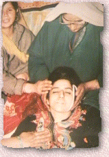

|
Hacked By Mr_Sweet |

|
mrsweet@puckoff.com |
|
Violations of Human rights perpetrated against the innocent
people
Violence against women
Violence against women takes the form of
Inspite of international condemnation this
 |
|
DoctorNuker , AntiChrist , Devil-C , cynic , 139_r00ted , v00d00 , McIntyre , ULG , LevelSeven , bl0w team , ALOC , ne0h , HiP , Xessor , mistuh clean , exode , lyp0x , Da^Bomb , mozy , k0ld , HIT2000 , HCV , un1x b0wl1ng t34m , hacksta , syxx , cult_hero , dr_fdisk^ , Hi-Tech Hate , gH , team spl0it , Stonehenge Crew , FL3M , attrition.org , hackernews.com , dutchthreat.org , projectgamma.com , net-security.org and all the others i miss.. |